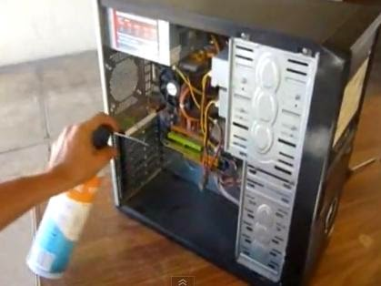
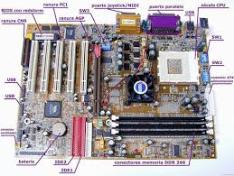
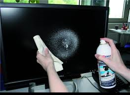
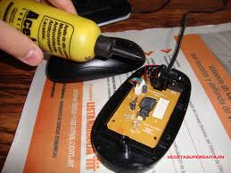
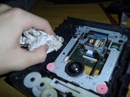
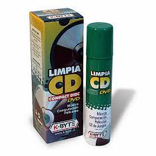
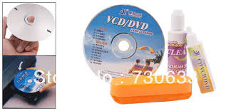
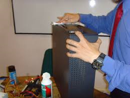

Materiales
regresar
Debemos tener siempre en cuenta que el calor y el polvo favorecen el desgaste de los circuitos ya que los exponen a condiciones de trabajo difíciles, por ello hay que conservarlos ventilados, frescos y protegidos de los cambios bruscos de voltaje.
Hay que tener en cuenta además que existen dentro de una computadora piezas electromecánicas que se desgastan con el uso y el tiempo: los cabezales de lecturas, los dicos duros, los coolers o ventiladores, por ejemplo.
El mantenimiento preventivo, en siete pasos
Puede definirse como el conjunto de acciones y tareas periódicas que se realizan a un ordenador para ayudar a optimizar su funcionamiento y prevenir (como dice su nombre) fallos serios, prolongando así su vida útil. Estas acciones y tareas periódicas pueden sintetizarse en una serie de siete pasos.
Limpieza interna del PC:
Esta tarea busca retirar el polvo que se adhiere a las piezas y al interior en general de nuestro PC. Ante todo debe desconectarse los cables externos que alimentan de electricidad y proveen energía a nuestra PC y de los demás componentes periféricos.
Para esta limpieza puede usarse algún aparato soplador o una pequeña aspiradora especial acompañada de un pincel pequeño. Poner especial énfasis en las cercanías al Microprocesador y a la Fuente.

Para esta limpieza puede usarse algún aparato soplador o una pequeña aspiradora especial acompañada de un pincel pequeño. Poner especial énfasis en las cercanías al Microprocesador y a la Fuente.
Revisar los conectores internos del PC: Asegurándonos que estén firmes y no flojos. Revisar además que las tarjetas de expansión y los módulos de memoria estén bien conectados.
Limpieza del monitor del PC: Se recomienda destapar el monitor del PC solo en caso que se vaya a reparar pues luego de apagado almacena mucha energía que podría ser peligrosa, si no es el caso, solo soplar aire al interior por las rejillas y limpiar la pantalla y el filtro de la pantalla con un paño seco que no deje residuos ni pelusas.
Atender al mouse: Debajo del mouse o ratón hay una tapa que puede abrirse simplemente girándola en el sentido indicado en la misma tapa. Limpiar la bolita que se encuentre dentro con un paño que no deje pelusas así como los ejes y evitar que haya algún tipo de partículas adheridas a ellos. Si es un mouse óptico, mantener siempre limpio el pad (o almohadilla donde se usa el mouse; esto es valido para cualquier tipo de mouse) y evitar que existan partículas que obstruyan el lente.
La disquetera: Existen unos diskettes especiales diseñados para limpiar el cabezal de las unidades de diskette. Antes de usarlos, soplar aire por la bandeja de entrada (donde se ingresan los diskettes).
Los CD-ROM, DVD, CD-RW: Al contar todos ellos con un dispositivo láser no se recomienda abrirlos si no se está capacitado para hacerlo. Existen unos discos especialmente diseñados para limpiar los lentes de este tipo de unidades.
La superficie exterior del PC y sus periféricos: Es recomendable para esta tarea una tela humedecida en jabón líquido o una sustancia especial que no contengan disolventes o alcohol por su acción abrasiva, luego de ello usar nuevamente un paño seco que no deje pelusas.

Para esta limpieza puede usarse algún aparato soplador o una pequeña aspiradora especial acompañada de un pincel pequeño. Poner especial énfasis en las cercanías al Microprocesador y a la Fuente.
Revisar los conectores internos del PC: Asegurándonos que estén firmes y no flojos. Revisar además que las tarjetas de expansión y los módulos de memoria estén bien conectados.

Limpieza del monitor del PC: Se recomienda destapar el monitor del PC solo en caso que se vaya a reparar pues luego de apagado almacena mucha energía que podría ser peligrosa, si no es el caso, solo soplar aire al interior por las rejillas y limpiar la pantalla y el filtro de la pantalla con un paño seco que no deje residuos ni pelusas.

Atender al mouse: Debajo del mouse o ratón hay una tapa que puede abrirse simplemente girándola en el sentido indicado en la misma tapa. Limpiar la bolita que se encuentre dentro con un paño que no deje pelusas así como los ejes y evitar que haya algún tipo de partículas adheridas a ellos. Si es un mouse óptico, mantener siempre limpio el pad (o almohadilla donde se usa el mouse; esto es valido para cualquier tipo de mouse) y evitar que existan partículas que obstruyan el lente.

La disquetera: Existen unos diskettes especiales diseñados para limpiar el cabezal de las unidades de diskette. Antes de usarlos, soplar aire por la bandeja de entrada (donde se ingresan los diskettes).

Los CD-ROM, DVD, CD-RW: Al contar todos ellos con un dispositivo láser no se recomienda abrirlos si no se está capacitado para hacerlo. Existen unos discos especialmente diseñados para limpiar los lentes de este tipo de unidades.


La superficie exterior del PC y sus periféricos: Es recomendable para esta tarea una tela humedecida en jabón líquido o una sustancia especial que no contengan disolventes o alcohol por su acción abrasiva, luego de ello usar nuevamente un paño seco que no deje pelusas.
